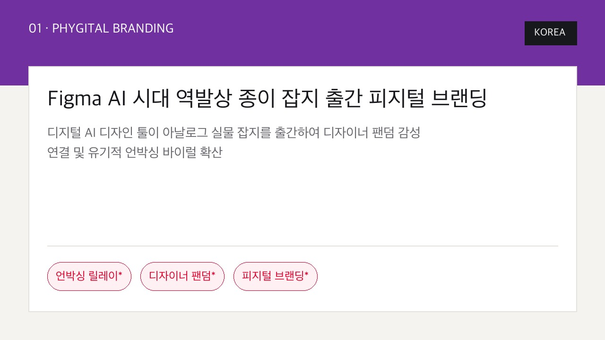
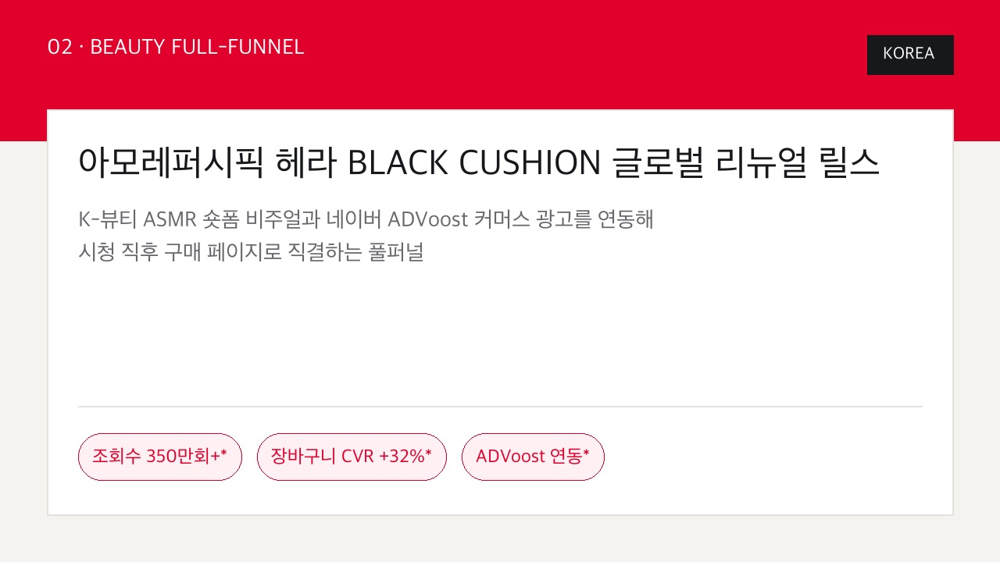
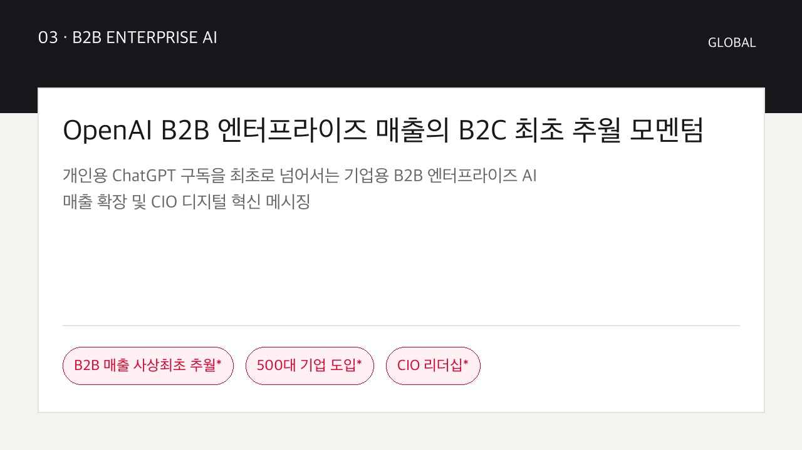
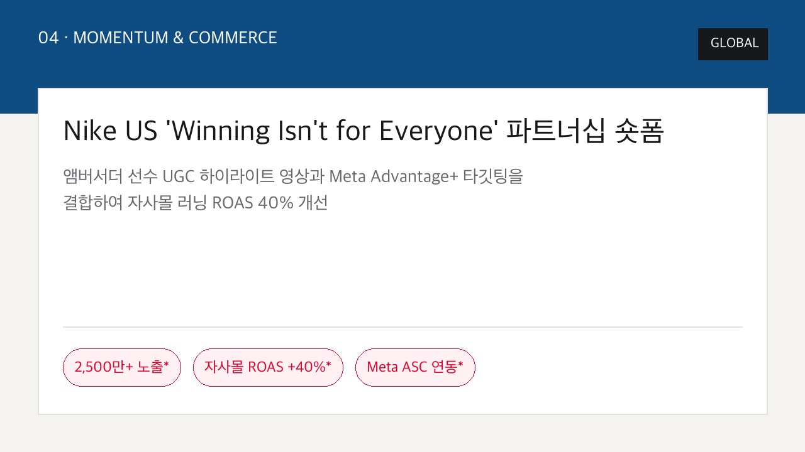
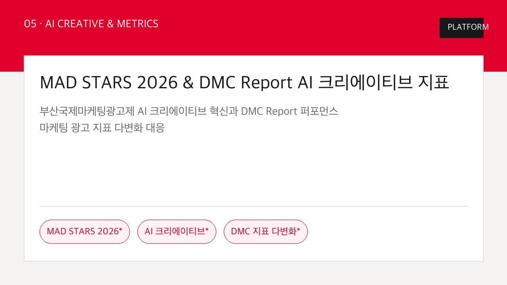
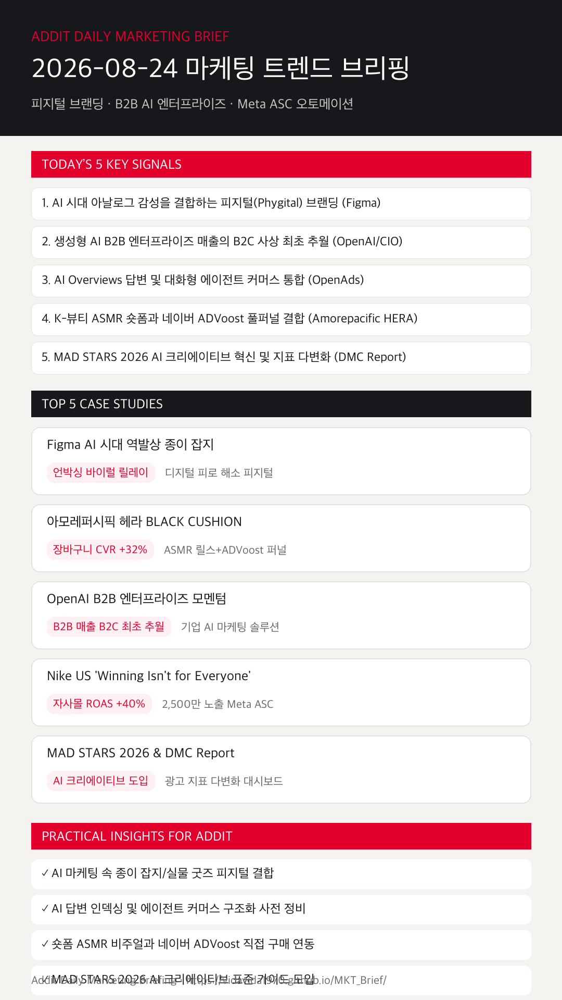

01
AI시대 디지털 피로 해소를 위한 '피지털(Phygital) 브랜딩'이 부상한다
Figma 종이 잡지 출간 사례처럼 디지털 도구 만연 속 아날로그 실물 터치포인트가 강력한 감성 팬덤을 형성합니다. (DIGITAL iNSIGHT)
Figma 역발상 종이 잡지 피지털, 헤라 ASMR 릴스 CVR +32%, OpenAI B2B 추월, Nike 2,500만 노출 Meta ASC 및 MAD STARS AI 크리에이티브 전략을 한눈에 확인합니다.
Figma 종이 잡지 출간 사례처럼 디지털 도구 만연 속 아날로그 실물 터치포인트가 강력한 감성 팬덤을 형성합니다. (DIGITAL iNSIGHT)
개인용 ChatGPT 구독을 넘어 기업용 마케팅 오토메이션 및 CIO 중심 B2B AI 조직 전환이 본격 안착했습니다. (i-boss & CIO Korea)
검색 답변 지면 내 브랜드 인덱싱을 위한 텍스트 구조화와 AI 대화형 추천 쇼핑 동선 정비가 필수화됩니다. (OpenAds)
아모레퍼시픽 헤라 사례처럼 릴스/쇼츠 시청 직후 ADVoost 기획전 구매 페이지로 직결해 장바구니 CVR 32%를 달성합니다. (HERA)
부산국제마케팅광고제 AI 기술 도입 가이드와 DMC Report 퍼포먼스 마케팅 동향을 대시보드에 즉시 반영합니다. (The PR & DMC Report)

KOREA디지털 AI 툴 피그마가 아날로그 종이 잡지를 발간해 유기적 언박싱 바이럴과 브랜드 로열티 상승을 이끌어냈습니다.

KOREAK-뷰티 ASMR 숏폼과 네이버 ADVoost 커머스 광고를 연결해 누적 350만 뷰 및 장바구니 CVR 32% 증가를 기록했습니다.

GLOBAL기업 마케팅 오토메이션 엔진 확장을 통해 사상 최초 B2B 매출 추월 및 500대 기업 생성형 AI 전환을 달성했습니다.

GLOBAL앰버서더 UGC 숏폼 컷을 Meta ASC 머신러닝 알고리즘과 연결해 2,500만 노출 및 자사몰 ROAS 40% 개선을 이뤘습니다.

PLATFORMAI 제작 공정 단축 솔루션과 DMC Report 퍼포먼스 마케팅 최신 동향을 대시보드에 즉시 반영한 통합 브리핑입니다.
AI 도구가 만연한 환경에서 종이 잡지, 오프라인 굿즈 등 실물 터치포인트를 결합해 브랜드 팬덤 경험의 밀도를 높입니다.
디지털 인사이트 피그마 근거 보기 →검색 엔진의 AI 답변(AI Overviews) 내 브랜드 인덱싱을 위한 랜딩 텍스트 구조화 및 AI 에이전트 추천형 커머스를 준비합니다.
오픈애즈 마케팅 리포트 근거 보기 →숏폼 튜토리얼 비주얼에 네이버 ADVoost 커머스 다이렉트 링크를 레이어링하여 장바구니 전환율(CVR)을 끌어올립니다.
헤라 공식 채널 근거 보기 →부산국제마케팅광고제 AI 기술 접목 가이드를 도입해 제작 공정을 단축하고 데이터 기반 크리에이티브 혁신을 수립합니다.
더피알 MAD STARS 근거 보기 →릴스/쇼츠 첫 2초 음성·자막 키워드 배치와 크리에이터 파트너십 컷을 Meta Advantage+ ASC 알고리즘에 오토메이션합니다.
Instagram Business 근거 보기 →CIO 중심 2026년 12대 디지털 혁신 과제와 생성형 AI B2B 엔터프라이즈 커머스 동향을 검토합니다.
CIO Korea 바로가기 →소셜미디어 퍼포먼스 마케팅 시장 동향 수치 지표와 8월 4주차 AI 에이전트 커머스 이슈를 분석합니다.
DMC Report 바로가기 →
마케팅 성과는 단순 스튜디오 광고 물량에서 피지털 아날로그 경험 결합, B2B AI 오토메이션, Meta ASC 파트너십 결합 퍼널로 완성됩니다.
{kind=link}